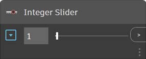
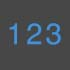
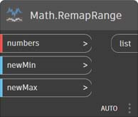
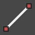
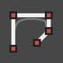
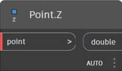
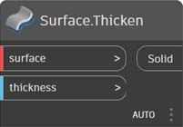

Index of Nodes
This index provides additional information on all the nodes used in this primer, as well as other components you might find useful. This is just an introduction to some of the 500 nodes available in Dynamo.
Display
Color
| CREATE | ||
.jpg) | Color.ByARGB | .jpg) |
 | Color Range | %20(1).jpg) |
| ACTIONS | ||
.jpg) | Color.Brightness | %20(1).jpg) |
 | Color.Components |  |
.jpg) | Color.Saturation |  |
 | Color.Hue |  |
| QUERY | ||
(1).jpg) | Color.Alpha |  |
.jpg) | Color.Blue |  |
(1)%20(3).jpg) | Color.Green |  |
Color.Red |  |
| CREATE | ||
.jpg) | GeometryColor.ByGeometryColor |  |
Watch
| ACTIONS | ||
 | View.Watch |  |
 | View.Watch 3D |  |
Input
| ACTIONS | ||
 | Boolean |  |
(1).jpg) | Code Block |  |
 | Directory Path |  |
 | File Path |  |
 | Integer Slider |  |
|  | Number | %20(1).jpg) |
 | Number Slider |  |
String |  | |
 | Object.IsNull |  |
List
| CREATE | ||
 | List.Create |  |
 | List.Combine |  |
 | Number Range | .jpg) |
 | Number Sequence |  |
| ACTIONS | ||
 | List.Chop |  |
%20(1).jpg) | List.Count |  |
 | List.Flatten |  |
 | List.FilterByBoolMask |  |
 | List.GetItemAtIndex |  |
List.Map |  | |
List.Reverse |  | |
 | List.ReplaceItemAtIndex |  |
 | List.ShiftIndices |  |
 | List.TakeEveryNthItem |  |
List.Transpose |
Logic
| ACTIONS | ||
 | If |  |
Math
| ACTIONS | ||
 | Math.Cos |  |
 | Math.DegreesToRadians |  |
 | Math.Pow |  |
 | Math.RadiansToDegrees |  |
 | Math.RemapRange |  |
 | Math.Sin |  |
 | Formula |  |
%20(1).jpg) | Map |  |
String
| ACTIONS | ||
 | String.Concat |  |
 | String.Contains |  |
 | String.Join | .jpg) |
 | String.Split |  |
 | String.ToNumber |  |
Geometry
Circle
| CREATE | ||
 | Circle.ByCenterPointRadius |  |
 | Circle.ByPlaneRadius |  |
| CREATE | ||
 | CoordinateSystem.ByOrigin |  |
%20(1).jpg) | CoordinateSystem.ByCyclindricalCoordinates |  |
Cuboid
| CREATE | ||
.jpg) | Cuboid.ByLengths |  |
%20(1).jpg) | Cuboid.ByLengths (origin) Create a Cuboid centered at input Point, with specified width, length, and height. |  |
%20(1).jpg) | Cuboid.ByLengths (coordinateSystem) Create a Cuboid centered at WCS origin, with width, length, and height. |  |
%20(1).jpg) | Cuboid.ByCorners Create a Cuboid spanning from low Point to high Point. |  |
.jpg) | Cuboid.Length Return the input dimensions of the Cuboid, NOT the actual world space dimensions. ** |  |
%20(1).jpg) | Cuboid.Width Return the input dimensions of the Cuboid, NOT the actual world space dimensions. ** |  |
.jpg) | Cuboid.Height Return the input dimensions of the Cuboid, NOT the actual world space dimensions. ** |  |
.jpg) | BoundingBox.ToCuboid Get the Bounding Box as a solid Cuboid |  |
{% hint style="warning" %} **In other words, if you create a Cuboid width (X-axis) length 10, and transform it to a CoordinateSystem with 2 times scaling in X, the width will still be 10. ASM does not allow you to extract the Vertices of a body in any predictable order, so it is impossible to determine the dimensions after a transform. {% endhint %}
Curve
| ACTIONS | ||
 | Curve.Extrude (distance) |  |
 | Curve.PointAtParameter |  |
Geometry Modifiers
| ACTIONS | ||
 | Geometry.DistanceTo |  |
 | Geometry.Explode |  |
 | Geometry.ImportFromSAT |  |
 | Geometry.Rotate (basePlane) |  |
Geometry.Translate |
Line
| CREATE | ||
 | Line.ByBestFitThroughPoints |  |
 | Line.ByStartPointDirectionLength |  |
|  | Line.ByStartPointEndPoint |  |
 | Line.ByTangency |  |
| QUERY | ||
 | Line.Direction |  |
NurbsCurve
| Create | ||
|  | NurbsCurve.ByControlPoints |  |
 | NurbsCurve.ByPoints |  |
NurbsSurface
| Create | ||
 | NurbsSurface.ByControlPoints |  |
 | NurbsSurface.ByPoints |  |
Plane
| CREATE | ||
 | Plane.ByOriginNormal |  |
 | Plane.XY |  |
Point
| CREATE | ||
 | Point.ByCartesianCoordinates |  |
 | Point.ByCoordinates (2d) |  |
 | Point.ByCoordinates (3d) |  |
 | Point.Origin |  |
| ACTIONS | ||
 | Point.Add |  |
| QUERY | ||
 | Point.X |  |
 | Point.Y |  |
 | Point.Z |  |
Polycurve
| CREATE | ||
 | Polycurve.ByPoints |  |
Rectangle
| CREATE | ||
 | Rectangle.ByWidthLength (Plane) |  |
Sphere
| CREATE | ||
 | Sphere.ByCenterPointRadius |  |
Surface
| CREATE | ||
.jpg) | Surface.ByLoft |  |
Surface.ByPatch | %20(1).jpg) | |
| ACTIONS | ||
.jpg) | Surface.Offset |  |
%20(1).jpg) | Surface.PointAtParameter |  |
%20(1).jpg) | Surface.Thicken |  |
UV
| CREATE | ||
.jpg) | UV.ByCoordinates |  |
Vector
| CREATE | ||
.jpg) | Vector.ByCoordinates |  |
%20(1).jpg) | Vector.XAxis |  |
%20(1).jpg) | Vector.YAxis |  |
%20(1).jpg) | Vector.ZAxis |  |
| ACTIONS | ||
.jpg) | Vector.Normalized |  |
CoordinateSystem
| CREATE | ||
| CoordinateSystem.ByOrigin | |
| CoordinateSystem.ByCyclindricalCoordinates | |
Operators
(1).jpg) | + |  |
(1)%20(1).jpg) | - |  |
(1).jpg) | * |  |
(1).jpg) | / |  |
%20(1).jpg) | % |  |
%20(1).jpg) | < |  |
.jpg) | > |  |
.jpg) | == |  |